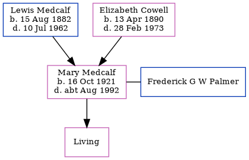

John Burton, the husband of Emma Belsey (the four times great-aunt of Nigel Horne), and married Emma at Ss Cosmus & Damian, Blean, Kent, England on Mar 24, 18321.
Citations
England Marriages 1538-1973 - Findmypast
Family Tree

Generated by ged2site. Last updated on Jun 11, 2024